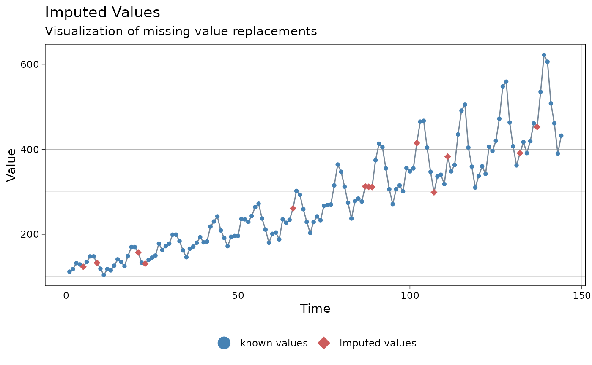
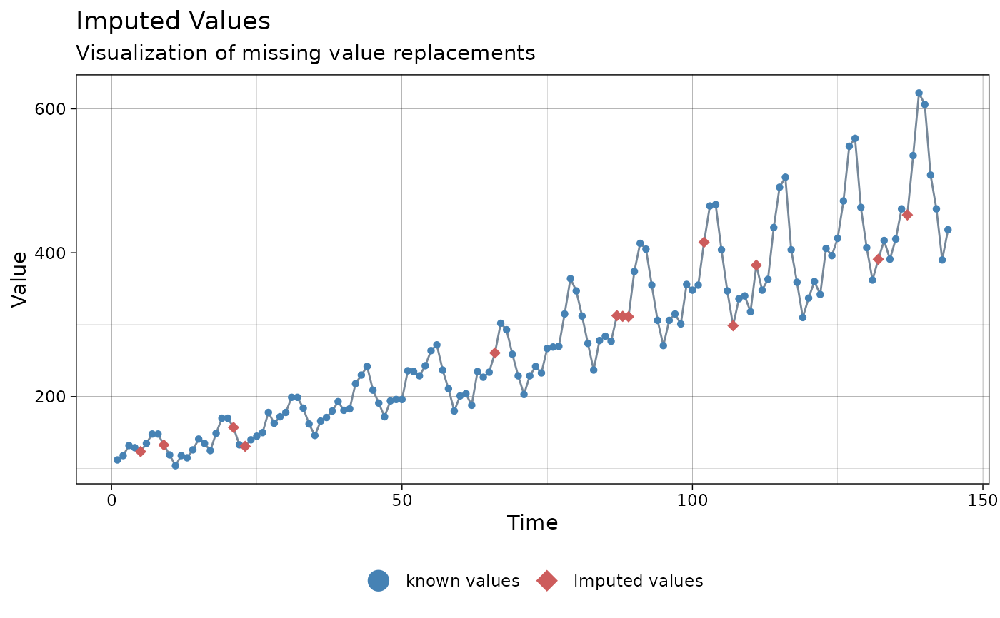

Visualize the imputed values in a time series.
ggplot_na_imputations(
x_with_na,
x_with_imputations,
x_with_truth = NULL,
x_axis_labels = NULL,
title = "Imputed Values",
subtitle = "Visualization of missing value replacements",
xlab = "Time",
ylab = "Value",
color_points = "steelblue",
color_imputations = "indianred",
color_truth = "seagreen3",
color_lines = "lightslategray",
shape_points = 16,
shape_imputations = 18,
shape_truth = 16,
size_points = 1.5,
size_imputations = 2.5,
size_truth = 1.5,
width_lines = 0.5,
linetype = "solid",
connect_na = TRUE,
legend = TRUE,
legend_size = 5,
label_known = "known values",
label_imputations = "imputed values",
label_truth = "ground truth",
theme = ggplot2::theme_linedraw()
)Arguments
- x_with_na
Numeric Vector or Time Series (
ts) object with NAs before imputation. This parameter and x_with_imputation shave to be set. The rest of the parameters are mostly needed for adjusting the plot appearance.- x_with_imputations
Numeric Vector or Time Series (
ts) object with NAs replaced by imputed values. This parameter and x_with_imputation shave to be set.The rest of the parameters are mostly needed for adjusting the plot appearance.- x_with_truth
Numeric Vector or Time Series (
ts) object with the real values (optional parameter). If the ground truth is known (e.g. in experiments where the missing values were artificially added) it can be displayed in the plot with this parameter. Default is NULL (ground truth not known).- x_axis_labels
For adding specific x-axis labels. Takes a vector of
DateorPOSIXctobjects as an input (needs the same length as x_with_na). The Default (NULL) uses the observation numbers as x-axis tick labels.- title
Title of the Plot.
- subtitle
Subtitle of the Plot.
- xlab
Label for x-Axis.
- ylab
Label for y-Axis.
- color_points
Color for the Symbols/Points of the non-NA Observations.
- color_imputations
Color for the Symbols/Points of the Imputed Values.
- color_truth
Color for the Symbols/Points of the NA value Ground Truth (only relevant when x_with_truth available).
- color_lines
Color for the Lines connecting the Observations/Points.
- shape_points
Shape for the Symbols/Points of the non-NA observations. See https://ggplot2.tidyverse.org/articles/ggplot2-specs.html as reference.
- shape_imputations
Shape for the Symbols/Points of the imputed values. See https://ggplot2.tidyverse.org/articles/ggplot2-specs.html as reference.
- shape_truth
Shape for the Symbols/Points of the NA value Ground Truth (only relevant when x_with_truth available).
- size_points
Size for the Symbols/Points of the non-NA Observations.
- size_imputations
Size for the Symbols/Points of the Imputed Values.
- size_truth
Size for the Symbols/Points of the NA value Ground Truth (only relevant when x_with_truth available).
- width_lines
Width for the Lines connecting the Observations/Points.
- linetype
Linetype for the Lines connecting the Observations/Points.
- connect_na
If TRUE the Imputations are connected to the non-NA observations in the plot. Otherwise there are no connecting lines between symbols in NA areas.
- legend
If TRUE a Legend is added at the bottom.
- legend_size
Size of the Symbols used in the Legend.
- label_known
Legend label for the non-NA Observations.
- label_imputations
Legend label for the Imputed Values.
- label_truth
Legend label for the Ground Truth of the NA values.
- theme
Set a Theme for ggplot2. Default is ggplot2::theme_linedraw(). (
theme_linedraw)
Details
This plot can be used, to visualize imputed values for a time series. Imputed values (filled NA gaps) are shown in a different color than the other values. If real values (ground truth) for the NA gaps are known, they can be optionally added in a different color.
The only really needed parameters for this function are x_with_na (the time series with NAs before imputation) and x_with_imputations (the time series without NAs after imputation). All other parameters are msotly for altering the appearance of the plot.
As long as the input is univariate and numeric the function also takes data.frame, tibble, tsibble, zoo, xts as an input.
The plot can be adjusted to your needs via the function parameters. Additionally, for more complex adjustments, the output can also be adjusted via ggplot2 syntax. This is possible, since the output of the function is a ggplot2 object. Also take a look at the Examples to see how adjustments are made.
Examples
# Example 1: Visualize imputation by na_mean
imp_mean <- na_mean(tsAirgap)
ggplot_na_imputations(tsAirgap, imp_mean)
 # Example 2: Visualize imputation by na_locf and added ground truth
imp_locf <- na_locf(tsAirgap)
ggplot_na_imputations(x_with_na = tsAirgap,
x_with_imputations = imp_locf,
x_with_truth = tsAirgapComplete
)
# Example 3: Visualize imputation by na_kalman
imp_kalman <- na_kalman(tsAirgap)
ggplot_na_imputations(x_with_na = tsAirgap, x_with_imputations = imp_kalman)

# Example 4: Same as example 1, just written with pipe operator
tsAirgap %>%
na_mean() %>%
ggplot_na_imputations(x_with_na = tsAirgap)
# Example 5: Visualize imputation by na_seadec - different color for imputed points
# Plot adjustments via ggplot_na_imputations function parameters
imp_seadec <- na_seadec(tsAirgap)
ggplot_na_imputations(x_with_na = tsAirgap,
x_with_imputations = imp_seadec,
color_imputations = "gold")
# Example 6: Visualize imputation - different theme, point size imputations
# Plot adjustments via ggplot_na_imputations function parameters
imp_seadec <- na_seadec(tsAirgap)
ggplot_na_imputations(x_with_na = tsAirgap,
x_with_imputations = imp_seadec,
theme = ggplot2::theme_classic(),
size_imputations = 5)
# Example 7: Visualize imputation - title, subtitle in center
# Plot adjustments via ggplot2 syntax
imp_seadec <- na_seadec(tsAirgap)
ggplot_na_imputations(x_with_na = tsAirgap, x_with_imputations = imp_seadec) +
ggplot2::theme(plot.title = ggplot2::element_text(hjust = 0.5)) +
ggplot2::theme(plot.subtitle = ggplot2::element_text(hjust = 0.5))
# Example 2: Visualize imputation by na_locf and added ground truth
imp_locf <- na_locf(tsAirgap)
ggplot_na_imputations(x_with_na = tsAirgap,
x_with_imputations = imp_locf,
x_with_truth = tsAirgapComplete
)
# Example 3: Visualize imputation by na_kalman
imp_kalman <- na_kalman(tsAirgap)
ggplot_na_imputations(x_with_na = tsAirgap, x_with_imputations = imp_kalman)

# Example 4: Same as example 1, just written with pipe operator
tsAirgap %>%
na_mean() %>%
ggplot_na_imputations(x_with_na = tsAirgap)
# Example 5: Visualize imputation by na_seadec - different color for imputed points
# Plot adjustments via ggplot_na_imputations function parameters
imp_seadec <- na_seadec(tsAirgap)
ggplot_na_imputations(x_with_na = tsAirgap,
x_with_imputations = imp_seadec,
color_imputations = "gold")
# Example 6: Visualize imputation - different theme, point size imputations
# Plot adjustments via ggplot_na_imputations function parameters
imp_seadec <- na_seadec(tsAirgap)
ggplot_na_imputations(x_with_na = tsAirgap,
x_with_imputations = imp_seadec,
theme = ggplot2::theme_classic(),
size_imputations = 5)
# Example 7: Visualize imputation - title, subtitle in center
# Plot adjustments via ggplot2 syntax
imp_seadec <- na_seadec(tsAirgap)
ggplot_na_imputations(x_with_na = tsAirgap, x_with_imputations = imp_seadec) +
ggplot2::theme(plot.title = ggplot2::element_text(hjust = 0.5)) +
ggplot2::theme(plot.subtitle = ggplot2::element_text(hjust = 0.5))
 # Example 8: Visualize imputation - title in center, no subtitle
# Plot adjustments via ggplot2 syntax and function parameters
imp_mean <- na_mean(tsAirgap)
ggplot_na_imputations(x_with_na = tsAirgap,
x_with_imputations = imp_mean,
subtitle = NULL) +
ggplot2::theme(plot.title = ggplot2::element_text(hjust = 0.5))
# Example 8: Visualize imputation - title in center, no subtitle
# Plot adjustments via ggplot2 syntax and function parameters
imp_mean <- na_mean(tsAirgap)
ggplot_na_imputations(x_with_na = tsAirgap,
x_with_imputations = imp_mean,
subtitle = NULL) +
ggplot2::theme(plot.title = ggplot2::element_text(hjust = 0.5))